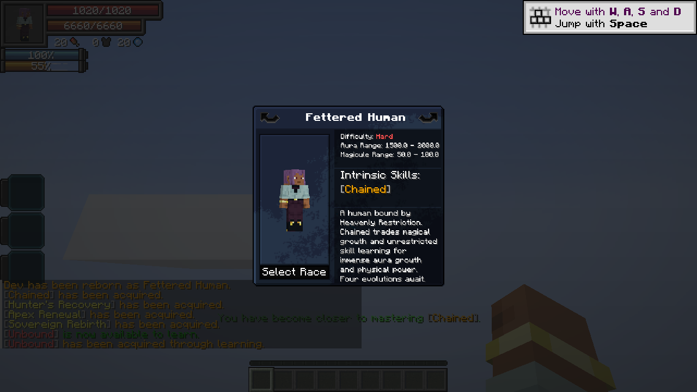

Choose Fettered Human at reincarnation. Difficulty: Hard. The lineage keeps your human appearance.
On this page

Starting resources
1,500–2,000 aura and 50–100 magicules. Chained is granted at birth and retained through evolution; starting aura is not multiplied.
Evolution requirements
- Tempered Vessel: 100,000 total EP; 1 mastered Battlewills; Chained 20%.
- Unshackled: 500,000 total EP; 2 mastered Battlewills; Chained 40%.
- Heavenly Restricted: 2,000,000 total EP; 3 mastered Battlewills; Chained 60%.
- Heavenbreaker: 8,000,000 total EP; 4 mastered Battlewills; Chained 100%.
Progression
Use Tensura’s race evolution menu. EP requirements check the total shown in Status. Hunter’s Recovery is granted at Unshackled; Apex Renewal at Heavenly Restricted; Sovereign Rebirth at Heavenbreaker.
Racial health bonuses
Tempered Vessel: +100 HP / +400 SHP. Unshackled: +300 HP / +1,600 SHP.
Heavenly Restricted: +600 HP / +3,600 SHP. Heavenbreaker: +1,000 HP / +6,600 SHP. Each stage replaces the old racial bonuses.
Starting skill rolls
Skills with magicule-cost abilities or target-skill stealing/copying are excluded from Fettered Human’s starting rolls. Pride is exempt; Creator and recorded derived skills remain allowed.
Related
Chained · Unbound · Aura regeneration · Air Walk
Pictures and video
